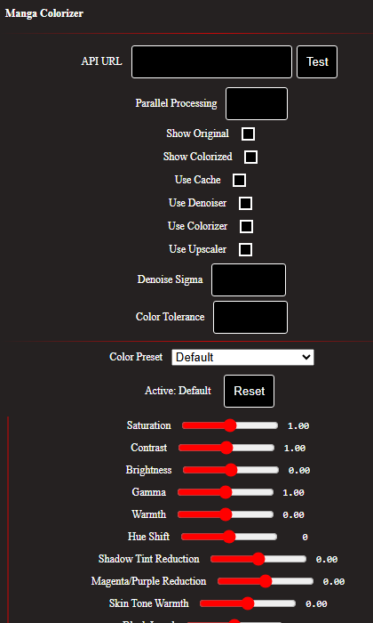

Demo
AI9 is the manga colorizer
Real local inference. Black-and-white manga in, colorized page out. This GIF is a real capture of AI9 taking a B&W page through the local GPU colorization workflow.

Labs // GPU Pipeline
Hardware-aware local manga colorization built around real GPU inference, automated installation, automatic CUDA/PyTorch runtime selection, and local-only processing. No cloud API in the loop: the GPU doing the work is yours.
Demo
Real local inference. Black-and-white manga in, colorized page out. This GIF is a real capture of AI9 taking a B&W page through the local GPU colorization workflow.
The Real Thing
The demo above, the extension popup, and the live backend check were captured from this project's own repository and its actually-running install, not staged or drawn.

$ curl -sk https://127.0.0.1:5000/
Manga Colorizer is Up and Running!
This is the same install this page tells you how to run: a real Flask backend, a real GPU behind it, and the real Windows background task (MangaColorizerAI9) keeping it alive between crashes and reboots.
In the Otaconskeep Story
Otacon is the agent platform. Genome Voice Trainer clones Piper voices for those agents on your GPU. AI9 is the manga colorizer, a family-adjacent OtaconsKeep product that does not require Lite Core: detect real hardware, select the exact runtime, fail loudly when something's wrong, never a silent cloud fallback. See the demo GIF above for B&W → color on a real local install.
Architecture
Concurrency is 1 by default: one page colorizes at a time, queued, so the GPU stays available for other work. A two-tier cache keyed by image content hash and processing options means switching color presets on an already-read page reuses the raw GPU output instead of a full re-run.
Hardware Support
The installer reads your GPU name and driver's max CUDA version directly from nvidia-smi, then picks the matching PyTorch wheel. No manual CUDA version guessing.
| GPU generation | Compute capability | PyTorch build |
|---|---|---|
| RTX 50-series (Blackwell) | sm_120 | cu128 |
| RTX 40-series (Ada) | sm_89 | cu121 / cu126 |
| RTX 30-series (Ampere) | sm_86 | cu118 |
Verified with a real GPU inference pass (matmul + cuDNN convolution kernels), not just torch.cuda.is_available(). That call can return True while still lacking compiled kernels for your specific architecture.
Install // One-click or manual
Left: download and double-click. Right: click Step 1, then Next for each step. Do not type only the filename into Command Prompt.
One-click · Windows
Download AI9 SetupSaves as AI9-Setup.bat. Open Downloads → double-click. If Windows SmartScreen appears, choose More info → Run anyway. The launcher fetches the rest automatically and installs Git Bash if needed.
Manual · click each step
Open Step 1, then Next. Needs an NVIDIA GPU.
curl -L -o "%USERPROFILE%\Downloads\AI9-Setup.bat" "https://otaconskeep.github.io/downloads/AI9-Setup.bat" && start "" "%USERPROFILE%\Downloads\AI9-Setup.bat"
Requires an NVIDIA GPU with a current Game Ready / Studio driver. No WSL, no Linux VM, no ZIP extract required for the normal path.
| Variable | Default | What it changes |
|---|---|---|
| AI9_INSTALL_DIR | C:\opt\manga-colorizer | Where AI9 gets installed |
| AI9_INSTALL_FIREFOX | 1 | Set to 0 to skip installing Firefox |
| AI9_REGISTER_TASK | 1 | Set to 0 to skip auto-registering the background service |
Status
Known limitations (from the repository's own troubleshooting notes):